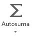
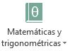
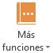
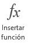

Excel posee una gran cantidad de herramientas que nos ayudan a resolver toda clase de problemas, desde sencillos hasta complejos, una de ellas son las fórmulas y las funciones. Con ellas podremos realizar distintas operaciones: matemáticas, lógicas y financieras, entre otras. Las fórmulas son operaciones matemáticas o llamadas a funciones en las que se analizan variables y se obtiene un resultado.
Siempre que vamos a escribir una fórmula, tenemos que utilizar el operador o signo igual (=). De esta manera, el programa interpretará que lo siguiente que escribiremos es una fórmula o una función.
Antes de describir la ficha Fórmulas de la cinta de opciones, veremos algunas de las operaciones básicas que podemos efectuar sin tener que recurrir a este menú. Para realizar operaciones, es posible utilizar los datos de dos maneras con características específicas:
Una vez que aprendamos a utilizar las fórmulas, ya no necesitaremos una calculadora para hacer las operaciones básicas dentro de una hoja de cálculo, sino que podremos sumar, restar, multiplicar y dividir por medio de la siguiente estructura:
Si lo necesitamos, podemos editar los datos que se encuentran dentro de la fórmula tanto desde la Barra de fórmulas como desde la celda que contiene la operación.
Para saber si una celda tiene una fórmula o si, simplemente, queremos ver la fórmula en la celda, presionamos la tecla F2. Excel mostrará la fórmula en la celda, y en el caso de que hayamos usado referencias a valores, señalará con un color cada una de las celdas que están involucradas en la operación. Esta tecla tiene el mismo efecto que hacer doble clic sobre la celda
Ahora sí conoceremos la ficha Fórmulas, que nos permite crear o modificar diferentes funciones.
El primer grupo, Biblioteca de funciones, contiene toda la variedad de fórmulas que existen en Excel. A continuación, las veremos en detalle
| Icono | Tipo de funciones | Detalles |
|---|---|---|
|  | Autosuma | Contiene funciones sencillas y de uso frecuente, para realizar una suma, calcular un promedio, obtener un valor máximo o mínimo y contar elementos. |
| Recientes | agrupa las últimas funciones utilizadas. | |
| Financieras | Posee las funciones para realizar cálculos financieros, como la obtención de intereses y tasas, calcular pagos y amortizaciones de préstamos. | |
| Lógicas | Estas funciones permiten realizar operaciones de lógica, como analizar si un valor cumple o no una determinada condición, en consecuencia, efectuar una acción; o averiguar si algo es verdadero o falso. | |
| Texto | Reúne las funciones para trabajar con textos, como extraer datos, pasar caracteres a mayúscula o minúscula, o unir el contenido de dos celdas para armar una frase. | |
| Fecha y hora | Incluye las funciones para realizar operaciones con fechas
y horas, como obtener los días laborales de un año o la fecha actual.
|
|
|  | Matemáticas y trigonométricas | Algunas de las funciones que podemos encontrar en este grupo son SUMA (con diferentes variantes), REDONDEO, COSENO, TANGENTE y PRODUCTO |
|  | Más funciones | Contiene cinco subgrupos de funciones avanzadas.
|
Si presionamos Insertar función , se abre un cuadro del diálogo con la lista de todas las funciones; ahí podemos buscar y seleccionar la que necesitamos. Por ejemplo, elegimos Suma y presionamos Aceptar.
Luego, se abrirá otro cuadro de diálogo para elegir las celdas que vamos a sumar, por ejemplo, B3 y B4. Luego de aceptar, obtenemos el resultado.